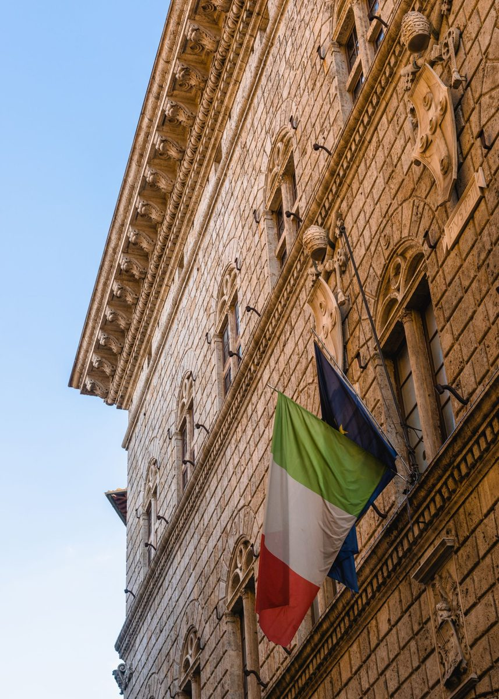
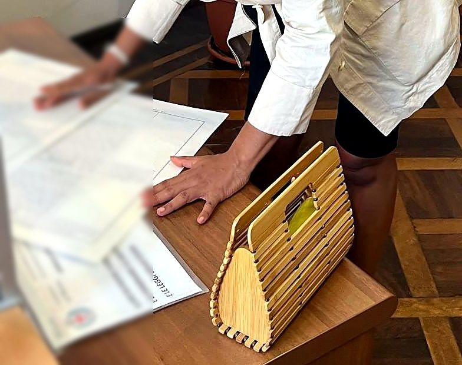
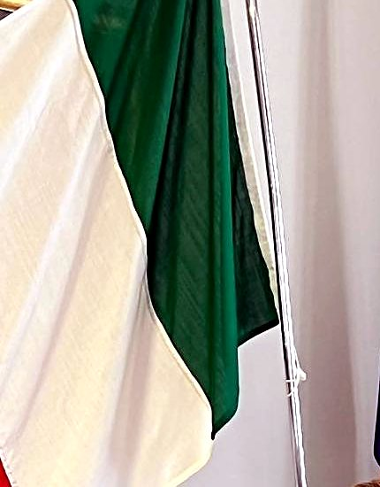
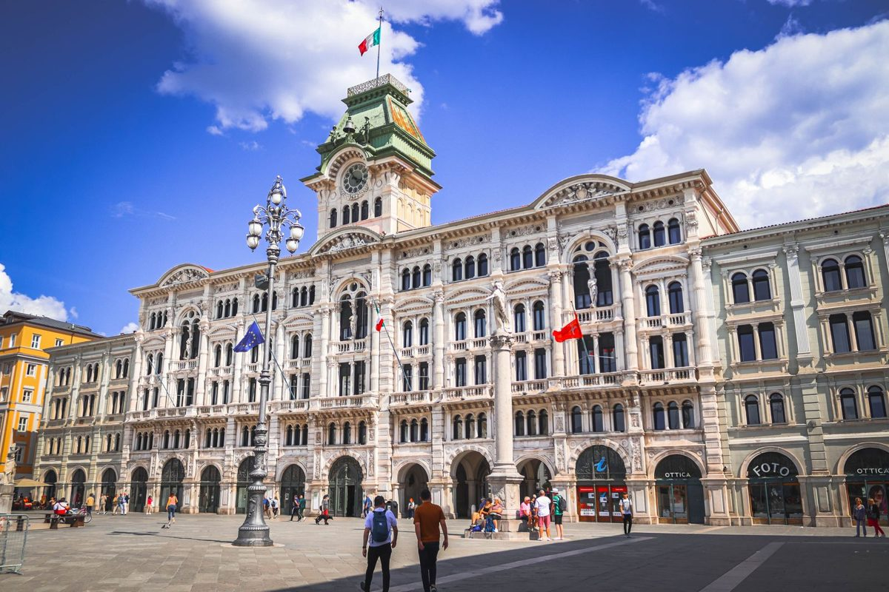
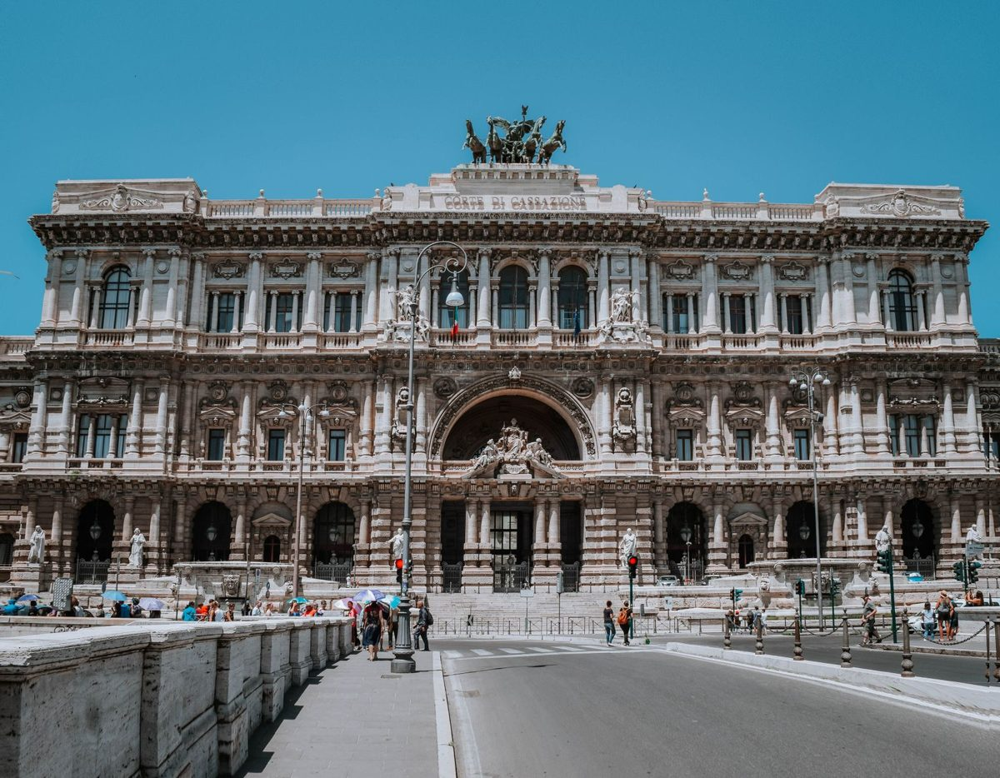
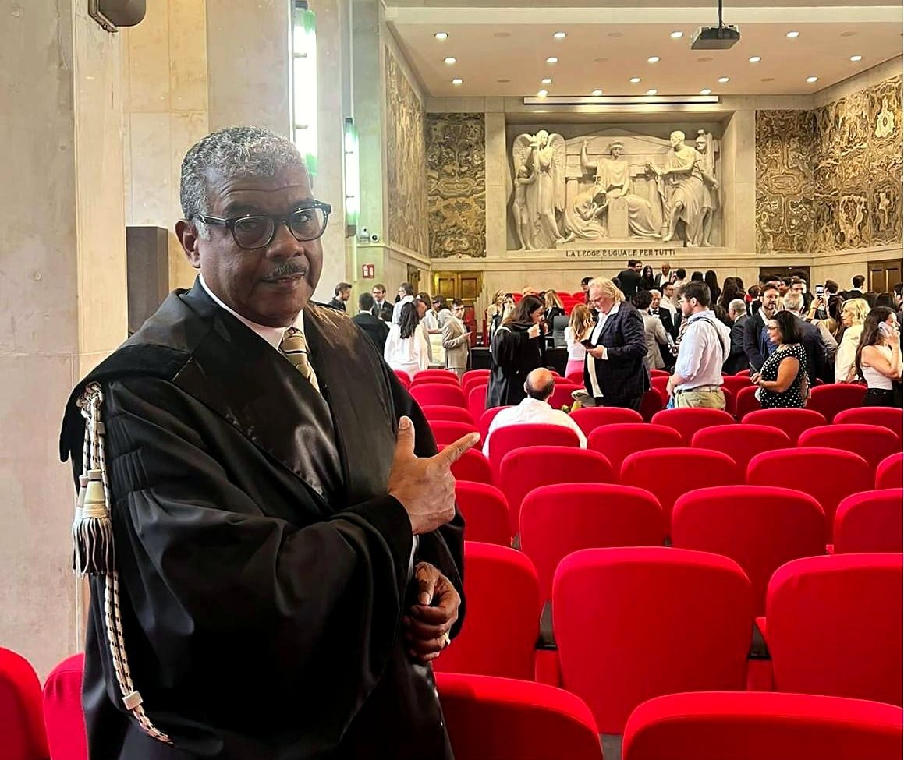
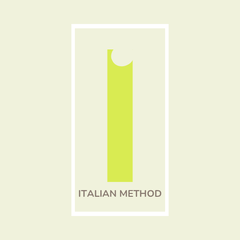
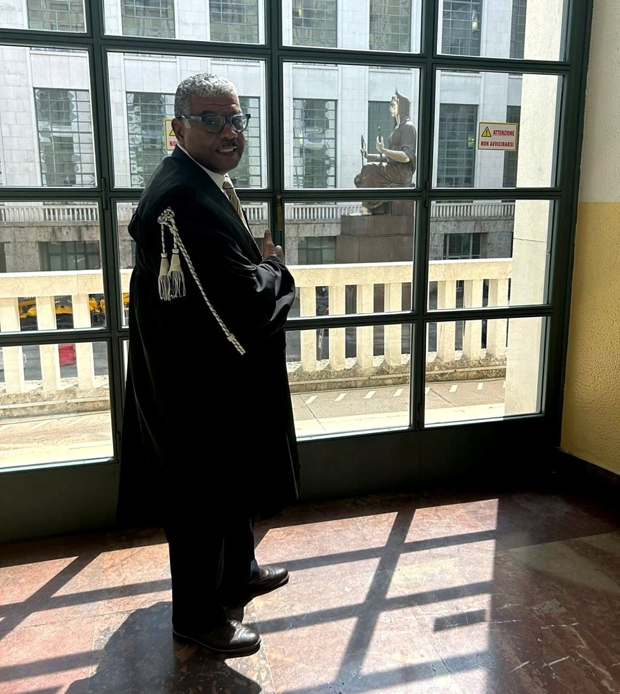

Decreto Flussi 2027: datas e vagas
165.850 entradas autorizadas, 650 para trabalho autônomo. Pré-cadastro até 7 de dezembro de 2026.
Ler →Cidadania italiana
Advogado para cidadania italiana, na Itália.
Ter um avô nascido na Itália já não basta. Pela Lei 74/2025, conta se pai, mãe, avô ou avó tem, ou tinha ao falecer, somente a cidadania italiana.
Fonte: Normattiva, art. 3-bis da Lei 91/1992
O escritório
O Studio Legale De Moura Machado é conduzido pelo Dr. Wilson Roberto de Moura Machado, advogado inscrito em Milão, em São Paulo e em Lisboa. Cada caso é analisado e acompanhado pessoalmente pelo advogado, da verificação dos documentos à audiência.
Primeira conversa sem compromisso, conforme a agenda. Pelo formulário, o escritório analisa as suas respostas e retorna o contato pelo WhatsApp.
O caminho da cidadania
A assinatura e a cerimônia são fotos do escritório; as demais imagens são ilustrativas. Por sigilo profissional, não mostramos o rosto nem o nome de quem atendemos.





Atuação
Cinco áreas de atuação. Em todas, o primeiro passo é verificar com documentos o que a lei permite no seu caso.
Por descendência, via administrativa e judicial, linha materna e correções de registro.
Ver o caminho → 02Equipollenza de diplomas, dichiarazione di valore e reconhecimento profissional.
Ver o procedimento → 03Vistos, permesso di soggiorno, renovação, reunificação familiar e longo período.
Ver os caminhos → 04Heranças com bens no Brasil e na Itália, divórcios e transcrições.
Ver como atuamos → 05Abrir ou expandir uma empresa na Itália.
Fale sobre o seu projeto →Guia de documentos: certidão de inteiro teor, Apostila de Haia e tradução juramentada. Ler o guia →
A lei hoje
A legislação sobre cidadania e imigração mudou muito desde 2025. Esta linha do tempo é atualizada a cada decisão relevante.
Taxa de €600 por requerente na via judicial.
Lei 74/2025: nascidos no exterior com outra cidadania só são italianos nas exceções do art. 3-bis.
A Corte Constitucional envia a questão à Corte de Justiça da UE (C-816/26).
Pré-cadastro do Decreto Flussi 2027 no portal ALI.
Envio dos pedidos (click day) por setor.
Atualizado em 4 de novembro de 2026.
Como trabalhamos
Questionário de 2 minutos e conversa pelo WhatsApp.
O caminho possível, os riscos, o prazo estimado e todos os custos.
Lista clara do que falta: certidões, traduções, apostilas.
Protocolo, audiência e atualizações a cada etapa.

O advogado
Advogado · Milão · São Paulo · Lisboa
Advogado inscrito na OAB/SP e, desde 2024, também na Ordem dos Advogados de Milão, com formação jurídica na Università degli Studi di Milano. Atua em cidadania italiana, reconhecimento de títulos, permanência, família e sucessão.
Responda a poucas perguntas. Se fizer sentido, o advogado continua a conversa com você pelo WhatsApp.
Para cuidar de cada caso pessoalmente, o Dr. Wilson elabora no máximo 3 pareceres jurídicos por semana.
O resultado é informativo e não substitui um parecer jurídico.Perguntas frequentes
Pela Lei 74/2025, o reconhecimento ficou limitado, salvo exceções, a quem tem pai, mãe, avô ou avó com somente a cidadania italiana, ou a quem se enquadra nas outras exceções do art. 3-bis da Lei 91/1992. Pedidos e processos iniciados até 27/03/2025 seguem as regras anteriores. Cada caso é verificado com documentos antes de qualquer recomendação.
Há três caminhos: o consulado italiano no Brasil, o Comune com residência regular na Itália ou a ação judicial no tribunal italiano. A escolha depende do grau de parentesco, da data do pedido e dos documentos disponíveis.
O cônjuge de cidadão italiano pode pedir a cidadania após dois anos de residência legal na Itália depois do casamento, ou três anos se residir no exterior, com prazos reduzidos pela metade se houver filhos e conhecimento do italiano no nível B1.
Para bisnetos e gerações seguintes, a questão está na Corte de Justiça da UE (caso C-816/26). Enquanto isso, existe um visto de trabalho para descendentes fora das cotas, com contrato de um empregador italiano.
Existe uma taxa fixa do tribunal de €600 por requerente, definida por lei. Os honorários dependem do número de pessoas e da complexidade, e são informados por escrito antes de qualquer contratação. Para audiências fora de Milão, somam-se as despesas de deslocamento e diária, também informadas antes.
Depende da via escolhida e do tribunal competente. O parecer indica a estimativa para o seu caso, sem promessa de prazo.
Não automaticamente. Conforme a finalidade, é preciso pedir a equipollenza à universidade, o reconhecimento finalizado ou o reconhecimento profissional ao ministério que supervisiona a profissão.
Para falecimentos a partir de 17/08/2015, a regra geral é a lei da última residência habitual do falecido (Regulamento UE 650/2012), salvo escolha diferente feita em testamento.
É a cópia integral do registro civil, com todas as anotações e averbações. É o formato exigido nos processos de cidadania italiana e portuguesa.
Na via judicial da cidadania, não: o advogado representa você por procuração. Nos demais procedimentos, indicamos quando a presença é obrigatória.
Atualizações jurídicas
165.850 entradas autorizadas, 650 para trabalho autônomo. Pré-cadastro até 7 de dezembro de 2026.
Ler →O que a Ordinanza 147/2026 significa para bisnetos e gerações seguintes.
Ler →Fora das cotas, com contrato de trabalho: o que já se sabe e o que ainda falta definir.
Ler →Início / Cidadania italiana
Desde a Lei 74/2025, o reconhecimento depende do grau de parentesco e da data do pedido. A questão está também na Corte de Justiça da UE. O primeiro passo é verificar, com documentos, o que se aplica ao seu caso.
É a pergunta mais buscada no Brasil sobre o tema. Desde 28/03/2025, quem nasceu no exterior e tem outra cidadania não é considerado italiano, salvo as exceções do art. 3-bis da Lei 91/1992, introduzido pelo Decreto-Lei 36/2025 e convertido pela Lei 74/2025.
As exceções são três: pedido administrativo ou judicial apresentado até 27/03/2025; um ascendente de primeiro ou segundo grau (pai, mãe, avô ou avó) que tem, ou tinha ao falecer, somente a cidadania italiana; ou um genitor que residiu na Itália por dois anos contínuos depois de se tornar italiano e antes do nascimento do filho.
Na prática: se o pai ou o avô também tinha outra cidadania, como a brasileira, a segunda exceção não se aplica e é preciso verificar as demais. A compatibilidade dessa regra está em exame na Corte de Justiça da UE (caso C-816/26).
Fontes: Normattiva: Decreto-Lei 36/2025, texto consolidado · Gazzetta Ufficiale n. 118 de 23/05/2025 (Lei 74/2025)
| Sua situação | Caminho possível |
|---|---|
| Pai, mãe, avô ou avó com somente a cidadania italiana | Via administrativa (consulado ou comune) ou judicial |
| Pedido ou processo iniciado até 27/03/2025 | Seguem as regras anteriores |
| Bisneto ou gerações seguintes | Questão em julgamento na Corte de Justiça da UE (C-816/26); análise caso a caso |
| Linha materna antes de 1948 | Via judicial |
Consulado. Pedido administrativo no consulado italiano no Brasil, com filas que podem durar anos.
Comune na Itália. Pedido administrativo com residência regular na Itália.
Tribunal. Ação no tribunal italiano competente. O advogado representa você por procuração e acompanha a audiência.
O cônjuge estrangeiro de cidadão italiano pode pedir a cidadania após dois anos de residência legal na Itália depois do casamento, ou após três anos do casamento se residir no exterior. Os prazos caem pela metade se o casal tiver filhos, e é exigido conhecimento da língua italiana no nível B1 (art. 5 da Lei 91/1992).
Na via judicial, a representação por advogado é obrigatória. Na via administrativa não é, mas a análise prévia dos documentos evita pedidos inadmissíveis segundo a Lei 74/2025 e retrabalho com certidões.
Na via judicial existe uma taxa de €600 por requerente, também em fase de recurso. Para uma família de quatro pessoas, são €2.400 só de taxa. Os honorários são informados por escrito no parecer.
Em julho de 2026 a Corte Constitucional italiana enviou à Corte de Justiça da UE a questão sobre o artigo 3-bis da Lei 91/1992 (Ordinanza 147/2026). Não prometemos resultado: explicamos os riscos de cada caminho no seu caso.
Depende da via e do tribunal competente: os prazos variam bastante entre os tribunais italianos. O parecer indica a estimativa para o seu caso, sem promessa de data.
As certidões brasileiras devem ser emitidas em inteiro teor, com Apostila de Haia, e acompanhadas de tradução para o italiano. Um erro de nome ou de data entre as certidões precisa ser retificado antes do pedido. Veja o guia de documentos.
Depois do reconhecimento, o cidadão que mora fora da Itália deve se inscrever na AIRE (Anagrafe degli Italiani Residenti all'Estero), o registro dos italianos residentes no exterior, por meio do consulado competente.
Início / Privacidade e cookies
Como este site trata os seus dados pessoais, nos termos do Regulamento (UE) 2016/679 (GDPR) e da legislação italiana.
O responsável pelo tratamento (titolare del trattamento) é o Avv. Wilson Roberto de Moura Machado, com domicílio profissional em Milão [indirizzo completo dello studio], P. IVA 10195520969. Contato para questões de privacidade: wilsonrmmachado@gmail.com [PEC, se disponibile].
Dados de navegação. Como em qualquer site, o servidor registra dados técnicos da conexão, como o endereço IP, a data e a hora do acesso e o navegador usado. Servem para o funcionamento e a segurança do site e não são usados para identificar quem visita.
Dados que você nos envia. No questionário “Analise o seu caso” você informa nome, e-mail, número de WhatsApp e as respostas sobre a sua situação. O site não guarda esses dados: eles ficam apenas no seu navegador até você tocar em “Enviar meu caso pelo WhatsApp”. Só então a mensagem é enviada, por você, ao número do escritório. O mesmo vale para mensagens enviadas por e-mail ou WhatsApp.
Pedimos que não envie, nesta primeira fase, dados de saúde ou outras informações sensíveis que não sejam necessárias para avaliar o seu caso.
Os dados não são usados para publicidade nem vendidos ou cedidos a terceiros.
Os dados ligados a um mandato estão cobertos pelo sigilo profissional do advogado.
Pedidos que não resultam em mandato: até [12 mesi: da confermare] após o último contato. Dados de um mandato: pela duração do mandato e, depois, pelo prazo de prescrição ordinária de 10 anos (art. 2946 do Código Civil italiano). Documentos fiscais: pelo prazo previsto em lei.
Você pode pedir acesso aos seus dados, a retificação, o apagamento, a limitação do tratamento e a portabilidade, além de se opor ao tratamento baseado em interesse legítimo (arts. 15 a 22 GDPR). Basta escrever ao endereço acima. Se considerar que os seus dados foram tratados de forma ilegítima, pode apresentar reclamação ao Garante per la protezione dei dati personali (garanteprivacy.it).
Este site não usa cookies de análise, de perfilamento ou de publicidade, nem ferramentas de terceiros que rastreiem a navegação. As fontes e as imagens são carregadas do próprio site. O serviço de hospedagem pode usar apenas cookies técnicos estritamente necessários à segurança, que não exigem consentimento. Por isso o site não mostra um banner de cookies.
Os links para sites externos (fontes oficiais, notícias, WhatsApp) levam a páginas que seguem as suas próprias políticas de privacidade e cookies.
Última atualização: [data di pubblicazione]
Início / Guia de documentos
Certidão de inteiro teor, Apostila de Haia, tradução juramentada e retificações: muitos atrasos nascem de um documento incompleto ou com divergências.
É a cópia integral do registro de nascimento, casamento ou óbito, com todas as anotações e averbações, emitida pelo cartório de registro civil. Nos processos de cidadania, a certidão em breve relato normalmente não é aceita.
Desde 14 de agosto de 2016, o Brasil aplica a Convenção da Apostila. O apostilamento é feito em cartórios habilitados pelo CNJ e substitui a antiga legalização consular. O valor de cada apostila segue a tabela de emolumentos do estado.
Para a Itália, os documentos brasileiros precisam de tradução para o italiano; a forma exigida (tradutor juramentado no Brasil ou tradução asseverada na Itália) depende do órgão que recebe o pedido.
Na cidadania italiana, é preciso provar que o antepassado italiano não se naturalizou brasileiro antes do nascimento do filho que transmite a cidadania. A certidão é emitida pelo Ministério da Justiça.
Divergências de nome, sobrenome ou data entre as certidões da linha precisam ser corrigidas antes do pedido. Erros evidentes podem ser retificados diretamente no cartório; os demais exigem ação judicial.
Monte primeiro a árvore da linha com nomes e datas. As divergências aparecem nessa fase, quando corrigi-las custa menos.
Início / Reconhecimento de títulos
Graduação, pós-graduação, curso técnico ou profissão regulamentada: para usar na Itália um título obtido no Brasil é preciso escolher o procedimento certo para a sua finalidade.
Em regra, sim: para as profissões de saúde, a autoridade competente é o Ministério da Saúde italiano, que pode condicionar o reconhecimento a medidas compensatórias.
Existe, porém, um regime de exceção: até 31 de dezembro de 2027 é permitido o exercício temporário das qualificações profissionais de saúde em derrogação às regras de reconhecimento, mediante contratação por estruturas de saúde.
É uma janela com prazo e requisitos próprios, que não substitui o reconhecimento definitivo. Para outras profissões regulamentadas a autoridade é outra: o Ministério da Justiça, por exemplo, nas profissões jurídicas.
Fontes: Regione Friuli Venezia Giulia: infermieri da Paesi extra UE · Assolombarda: infermieri professionali · Ministero della Giustizia: riconoscimento titoli esteri
Não automaticamente. Títulos de estudo e qualificações obtidos no exterior não têm valor legal na Itália. O procedimento correto depende da finalidade.
| Finalidade | Procedimento | Quem decide |
|---|---|---|
| Obter o título italiano correspondente | Equipollenza (reconhecimento acadêmico) | A universidade italiana, por decreto reitoral |
| Continuar os estudos ou participar de um concurso | Reconhecimento finalizado (antiga equivalência) | A universidade ou a administração competente |
| Exercer uma profissão regulamentada | Reconhecimento profissional | O ministério que supervisiona a profissão |
| Ensino fundamental e médio | Equipollenza escolar | Ufficio Scolastico Territoriale |
É um documento informativo em italiano, emitido pela representação diplomática ou consular italiana do país onde o título foi obtido. Descreve o título, a instituição e o percurso de estudos. Não é um reconhecimento: é um dos documentos exigidos nos pedidos. Em alguns casos, o CIMEA emite uma declaração alternativa.
Indicamos o procedimento adequado à sua finalidade, organizamos a documentação e acompanhamos o pedido junto à universidade ou ao ministério. Em caso de indeferimento, avaliamos os meios de impugnação.
Início / Permanência na Itália
Do primeiro visto à residência de longo período: cada etapa tem requisitos, prazos e documentos próprios. Um erro no pedido ou na renovação pode comprometer anos de permanência regular.
O Decreto interministerial de 17/11/2025, publicado na Gazzetta Ufficiale n. 273 de 24/11/2025, incluiu o Brasil entre os sete países cujos cidadãos, se descendentes de cidadão italiano, podem obter visto de trabalho subordinado fora das cotas.
O pedido continua dependendo de um contrato com empregador italiano e do nulla osta. Depois da entrada, a permanência segue as regras do permesso di soggiorno: renovação antes do vencimento e, após cinco anos de residência legal, o permesso UE de longo período.
Para quem tem pai, mãe, avô ou avó cidadão italiano por nascimento, a Lei 74/2025 também reduziu de três para dois anos a residência legal exigida para pedir a naturalização.
Fontes: Ministero del Lavoro: discendenti di italiani, ingressi fuori quota · Gazzetta Ufficiale n. 273 de 24/11/2025
Desde 17/11/2025 descendentes de italianos nascidos no Brasil podem pedir visto de trabalho subordinado fora das cotas do Decreto Flussi, com contrato de um empregador italiano. As regras práticas nos consulados ainda estão sendo definidas: analisamos se esse caminho faz sentido para você.
A renovação deve ser pedida antes do vencimento, pelo kit postal ou diretamente na Questura, conforme o tipo de permesso. Verificamos requisitos e documentos antes do envio, para evitar indeferimentos por falhas formais.
É o título de residência por tempo indeterminado para quem reside legalmente na Itália há pelo menos cinco anos. Exige, entre outros requisitos, renda não inferior ao assegno sociale, alojamento adequado e conhecimento da língua italiana (nível A2). O documento é renovado a cada dez anos para adultos.
| Tipo de entrada | Vagas 2027 |
|---|---|
| Trabalho subordinado não sazonal | 76.200 |
| Trabalho sazonal (agricultura e turismo) | 89.000 |
| Trabalho autônomo | 650 |
Pré-cadastro de 23/10 a 07/12/2026 no portal ALI do Ministério do Interior; envios entre 12/01 e 18/02/2027, por setor.
Contra o indeferimento, a revogação ou a recusa de renovação os prazos para recorrer são curtos. Procure o advogado assim que receber a comunicação.
Início / Família e sucessão
Heranças com bens em dois países, divórcios e registros de estado civil exigem verificar qual lei se aplica e onde cada ato produz efeito.
Para falecimentos a partir de 17/08/2015, a Itália aplica o Regulamento (UE) 650/2012: a lei aplicável à sucessão é a do Estado da residência habitual do falecido no momento da morte, salvo vínculos manifestamente mais estreitos com outro Estado.
O Regulamento tem aplicação universal: a lei indicada pode ser também a de um país fora da UE, como o Brasil. Em testamento, é possível escolher a lei do país de nacionalidade; em 2023, a Corte de Justiça da UE esclareceu que essa escolha não é reservada a cidadãos europeus.
Para quem tem dupla cidadania e bens nos dois países, a escolha da lei aplicável é uma decisão a tomar em vida, por testamento.
Fontes: Ministero degli Affari Esteri: successioni · Regulamento (UE) 650/2012 (EUR-Lex)
Para falecimentos a partir de 17/08/2015, a Itália aplica o Regulamento (UE) 650/2012: em regra, a sucessão inteira é regida pela lei do Estado da última residência habitual do falecido, que pode ser também um país fora da União Europeia, como o Brasil. Em testamento, é possível escolher a lei do país de nacionalidade.
Se o falecido deixou bens na Itália, como imóveis ou contas, os herdeiros precisam regularizar a sucessão também aqui, com obrigações fiscais próprias. Se o falecido residia na Itália, o imposto italiano incide sobre o patrimônio mundial; se residia no exterior, apenas sobre os bens situados na Itália.
A sentença estrangeira de divórcio tem, em regra, eficácia automática na Itália (art. 64 da Lei 218/1995), mas precisa ser transcrita no Comune italiano competente, com legalização e tradução. Sem a transcrição, o registro civil italiano continua indicando o casamento.
Início / Empresas na Itália
Brasil → Itália
O caminho de entrada, o tipo societário e as obrigações do primeiro ano definidos antes do investimento, com um advogado inscrito em Milão, em São Paulo e em Lisboa.
Primeira orientação
Duas escolhas para ver quais vias de entrada podem se aplicar ao seu projeto. É uma orientação geral, não um parecer.
Escolha uma opção em cada grupo para ver os caminhos possíveis.
Itália
O caminho depende do passaporte, do tipo de atividade e do capital disponível. São quatro vias principais.
Para quem quer abrir uma atividade própria
Dentro das cotas anuais do Decreto Flussi: 650 vagas para trabalho autônomo em 2027, para todos os países fora da UE, além dos parâmetros financeiros da Câmara de Comércio.
Calendário 2027 [riverificare sul portale ALI del Ministero dell'Interno prima di pubblicare]
Para fundadores de startup inovadora
Recursos de pelo menos €50.000 e aprovação do Comitê do Ministério das Empresas e do Made in Italy (MIMIT).
Para quem investe capital
€250.000 em startup inovadora, €500.000 em empresa italiana, €1 milhão em doação de interesse público ou €2 milhões em títulos públicos. Vale também para quem investe por meio de uma sociedade da qual é representante legal.
Para quem tem passaporte italiano
Abre a empresa como cidadão europeu, sem visto.
Como trabalhamos
Cada etapa depende da anterior. Por isso a análise jurídica vem antes do investimento, e não depois.
Etapa 1
Análise do projeto, do passaporte e do capital: qual caminho de entrada é viável para o seu projeto.
Etapa 2
Escolha do tipo societário, contrato social e acordos entre sócios, antes de qualquer investimento.
Etapa 3
Pedido de nulla osta e visto, com a documentação do projeto.
Etapa 4
Constituição da sociedade e registros, com o notário quando exigido e em conjunto com o contador.
Etapa 5
Permesso di soggiorno, compliance do primeiro ano e reunificação familiar.
Experiência própria
O Dr. Wilson é sócio da MACHADO S.R.L.S., a empresa familiar de Bergamo que mantém o Caterinho, marca de gastronomia e casual catering criada pelos filhos. Contribuiu com capital e é o sócio responsável pela parte jurídica e de compliance [verificare in visura: consigliere senza deleghe].
Conhece por experiência direta a Câmara de Comércio, as licenças, a relação com o contador e as obrigações do primeiro ano: as mesmas etapas que um empreendedor brasileiro encontra na Itália.
Quem faz o quê
Assessoria jurídica
Advogado. A consultoria jurídica é prestada exclusivamente por ele.
Apoio operacional à abertura de negócios

Sistema de apoio à abertura de empresas na Itália, com experiência sobretudo no setor de alimentação. Italian Method é uma marca de Proverbi 123.
Serviço distinto, de natureza não jurídica, com contrato separado. Não substitui a consultoria jurídica e não é prestado pelo escritório.
O visto para investidores (art. 26-bis do Texto Único da Imigração) prevê €2 milhões em títulos públicos italianos, €500.000 em empresa italiana, €250.000 em startup inovadora ou €1 milhão em doação de interesse público.
Desde o Decreto Semplificazioni (DL 76/2020), o visto vale também para quem investe por meio de veículos societários de que é representante legal, como noticiou Il Sole 24 Ore.
Sem esse capital, o caminho mais comum é o visto para trabalho autônomo, dentro das cotas anuais do Decreto Flussi. A escolha da estrutura vem antes do investimento.
Fontes: Il Sole 24 Ore: visto investitori esteri più ampio · Embaixada da Itália: checklist visto per investitori
Com passaporte somente brasileiro, as vias principais são o visto para trabalho autônomo, dentro das cotas anuais do Decreto Flussi, o Italia Startup Visa, para startup inovadora com pelo menos €50.000, e o visto para investidores. Com cidadania italiana já reconhecida, a empresa é aberta como cidadão europeu, sem visto.
O equivalente italiano é o visto para investidores (art. 26-bis do Texto Único da Imigração): €250.000 em startup inovadora, €500.000 em empresa italiana, €1 milhão em doação de interesse público ou €2 milhões em títulos públicos.
É o decreto que fixa as cotas anuais de entrada de trabalhadores de fora da UE. Para 2027 prevê 650 vagas para trabalho autônomo, para todos os países fora da UE. As datas de envio dos pedidos são definidas pelo Ministério do Interior italiano.
Sim, para trabalho subordinado: desde o decreto de 17/11/2025, cidadãos brasileiros descendentes de cidadão italiano podem obter esse visto fora das cotas, com contrato de um empregador italiano. Para abrir uma empresa, valem as outras vias.
Não. Com a cidadania italiana reconhecida, a empresa é aberta como cidadão europeu, sem visto.
Depende do tipo societário, da atividade e do caminho de entrada. Os honorários são informados por escrito antes de qualquer contratação.
O advogado assina no máximo três pareceres escritos por semana, para analisar cada projeto com atenção.
A consultoria jurídica é prestada exclusivamente pelo advogado.
Início / O advogado
Advogado em São Paulo, Milão e Lisboa. Domicílio profissional em Milão.

Advogado no Brasil, inscrito na OAB/SP (n. 117.586). Na Itália, estudou na Università degli Studi di Milano e foi admitido à advocacia em julho de 2024 (Ordine degli Avvocati di Milano, n. 39362). É inscrito também na Ordem dos Advogados, Conselho Regional de Lisboa (n. 54071L).
Conhece o percurso de quem se estabelece na Itália por experiência própria: chegou como imigrante e passou pelos mesmos procedimentos que hoje acompanha para os clientes.
Atua em cidadania italiana, reconhecimento de títulos, permanência, família e sucessão, em todos os tribunais italianos. É também sócio de uma empresa familiar de gastronomia em Bergamo, onde cuida da parte jurídica e de compliance.
Para cuidar de cada caso pessoalmente, elabora no máximo três pareceres jurídicos por semana.
Contato
O primeiro passo é contar o seu caso. Respondemos pelo WhatsApp, em português ou italiano.
Conteúdo informativo, não substitui um parecer jurídico.